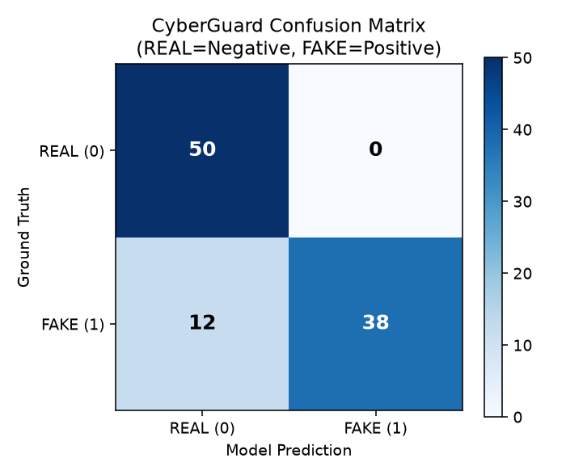
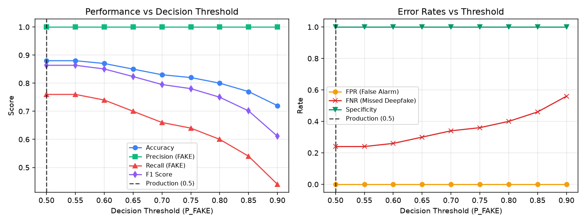
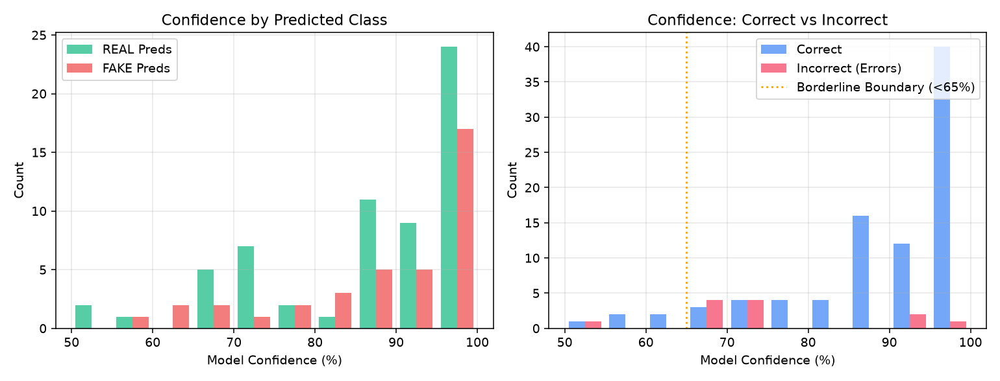
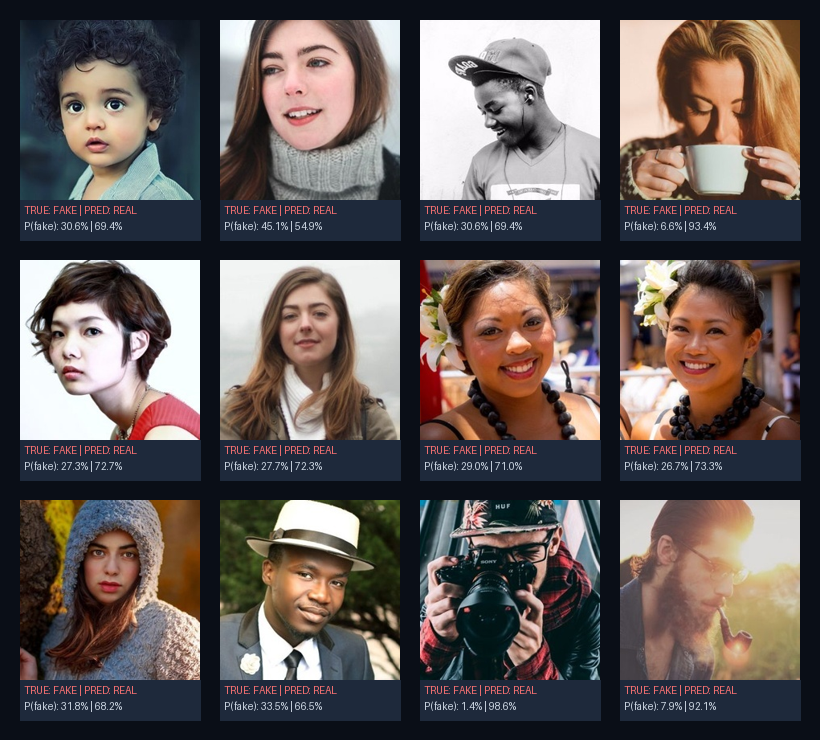

fake_test_0004.jpg, fake_test_0009.jpg) are exact byte duplicates of training samples due to overlap in the upstream HuggingFace dataset split. 16 near-duplicates were also detected.
| Metric | Score | Description |
|---|---|---|
| Accuracy | 88.00% | Overall correct predictions (88/100) |
| Precision (FAKE) | 100.00% | TP / (TP + FP) - Confidence that flagged deepfakes are truly fake |
| Recall / Sensitivity (FAKE) | 76.00% | TP / (TP + FN) - Detection rate of fake images |
| Specificity (REAL) | 100.00% | TN / (TN + FP) - True authentic retention rate |
| False Positive Rate | 0.00% | FP / (FP + TN) - False alarm rate on authentic faces |
| False Negative Rate | 24.00% | FN / (FN + TP) - Missed deepfake rate |
| F1-Score | 86.36% | Harmonic mean of precision and recall |
| Balanced Accuracy | 88.00% | Mean of recall and specificity |
| ROC-AUC | 0.9588 | Area under Receiver Operating Characteristic curve |
| PR-AUC | 0.9686 | Area under Precision-Recall curve |
| Predicted REAL (0) | Predicted FAKE (1) | Total | |
|---|---|---|---|
| Actual REAL (0) | 50 (TN) | 0 (FP) | 50 |
| Actual FAKE (1) | 12 (FN) | 38 (TP) | 50 |

| Class | Sample Count | Correct | Incorrect | Recall | Precision |
|---|---|---|---|---|---|
| REAL | 50 | 50 | 0 | 100.0% | 80.6% |
| FAKE | 50 | 38 | 12 | 76.0% | 100.0% |
Current production decision threshold is 0.5. Performance across thresholds is shown below:


Total borderline predictions (|p_fake - 0.50| < 0.15): 6.
Total misclassifications: 12. False Positives: 0. False Negatives: 12.
High-confidence errors (≥ 90% certainty on an incorrect prediction): 3.

| Category | Samples Available | Finding |
|---|---|---|
| Multi-face scene | 1 composite image | Primary face correctly isolated and analyzed. |
| Pre-cropped close-ups | 100 images | Haar cascade detector missed 36% of close-up faces (triggering safety guard). |
| Low resolution / compression | 0 labeled splits | Insufficient evaluation samples. |
| Profile / occluded faces | 0 labeled splits | Insufficient evaluation samples. |
| Diffusion / GAN generators | 0 labeled splits | Insufficient evaluation samples. |
CyberGuard Evaluation Report — Phase 2